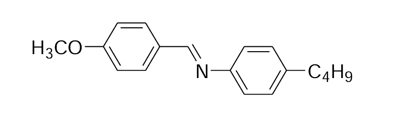
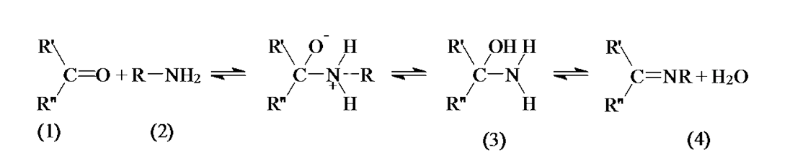
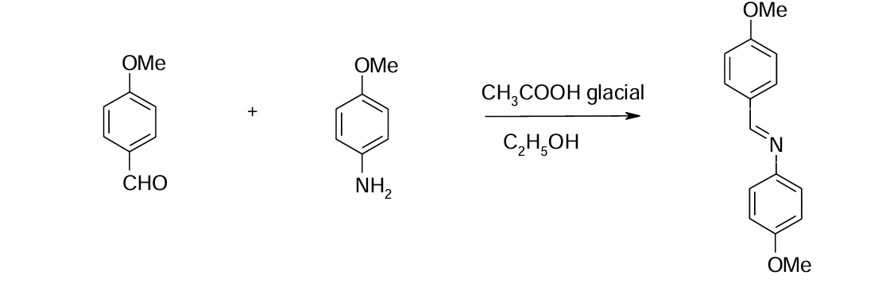

Schiff-based molecules (mesogens) have been extensively investigated until their commercial use in LCDs.
The azomethines Schiff bases belong to a classic type of molecule with liquid crystal properties.
The synthesis of 4-methoxybenzylidene-4'-butylaniline and its application as a
liquid crystals with nematic phase at room temperature in liquid crystal display devices has proved
the existence of structure-property relationships of Schiff-base compounds.
The simple synthesis procedures have made this type of compounds to be used in the design of new mesogens
(example: metallomesogens, banana liquid crystals, mesogens with hydrogen bonds).

Figure 1. Chemical structure and phase transitions for MBBA (4-methoxybenzyliden-4’-butylaniline).
Alkyloxyaniline compounds
The compounds of the type 4-alkyloxybenzylidene-4'-alkyl- or alkyloxyyaniline are one of the most interesting
and intensively studied Schiff bases, which show rich polymorphism. These imine-type ligands are used to prepare
complex compounds with palladium and platinum precursors, named metallomesogens. The properties of these molecules
can be adjusted and can have potential applications in LCD technology.
Imine or Schiff Base ligands are obtained relatively simply by the condensation reaction of primary amines (2)
with carbonyl precursors (1), in alcoholic solution and sometimes with heating under reflux (Figure 2).
The reaction is reversible to give the carbinol-amine intermediate (3) or the reaction products containing the
imine or azomethine group (C = N).

Figure 2. The general reaction mechanism for the preparation of Schiff bases.
Preparation of an alkyloxyaniline base

Figure 3. Preparation of 4-methyloxybenzylidene-4’-methyloxyanilineFigure 4. Crystalisation of the obtained Schiff base
Long alkoxy groups are required to generate the properties of liquid crystals. The position of alkoxy groups
on the benzene ring has a major influence on the thermal behaviour and molecule's properties. The introduction
of the second alkoxy group leads to a significant decrease in molecular anisotropy and destabilisation of
liquid crystal phase.